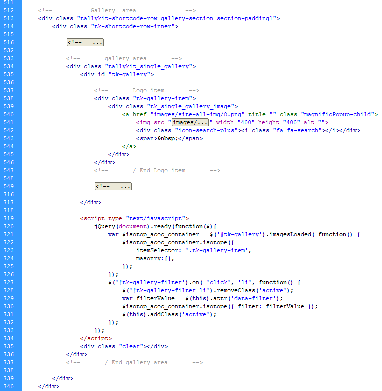

David & MaryTheme Documentation |
HTML StructureThis theme is a fixed layout with one columns. All of the information within the main content area is nested within a div with an class of "main-inner". Navigation menu is within a div with an class of "menu_area hheaight". The general template structure is the same throughout the template. Here is the general structure :
Hone template Structure
Blog template Structure
Gallery Structure
Menu at this theme using horizontal menu style (for dropdown it's using ul again within top li), Here is menu structure :
All footer content text is nested within a div an class of "copy_text" and " footer_icons " (for footer icons). Here is detail of footer strucure :
. Here is Social Icons strucure :
CSS File and StructurePump HTML Template have are 5 css files:
1. Style.css ( Main CSS use for all pages ) Here sample structure of CSS use on this theme If you would like to edit a specific section of the site, simply find the appropriate label in the CSS file, and then scroll down until you find the appropriate style that needs to be edited.
Javascript / JqueryThis theme imports 15 Javascript files, here the detail :
1. gauge.min.js Once again, thank you so much for purchasing this theme. As I said at the beginning, I'd be glad to help you if you have any questions relating to this theme. No guarantees, but I'll do my best to assist. If you have a more general question relating to the themes on ThemeForest, you might consider visiting the forums and asking your question in the "Item Discussion" section. Thanks,
|
|